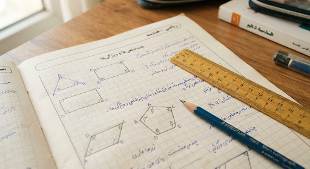

درس دوم: زاویههای داخلی و قطرهای چندضلعی
auto_stories
قاعده طلایی مجموع زاویهها
فرمول مهم
مجموع زاویههای داخلی هر $n$ضلعی از فرمول زیر به دست میآید:
S = (n - 2) × 180°
تجزیه پنجضلعی به مثلثها از یک رأس
شکل ۱-۳
همانطور که در شکل مشاهده میکنید، رسم قطرها از رأس «الف»، پنجضلعی را به ۳ مثلث تفکیک میکند. بنابراین مجموع زاویهها برابر است با: 3 × 180° = 540°

کاربرد هندسه در کاشیکاریهای سنتی ایرانی
architecture
edit_note
فعالیت و کار در کلاس
تعداد قطرهای یک ۶ضلعی را حساب کنید و بررسی نمایید آیا فرمول زیر صحت دارد؟
تعداد قطرهای nضلعی:
[n × (n - 3)] / 2